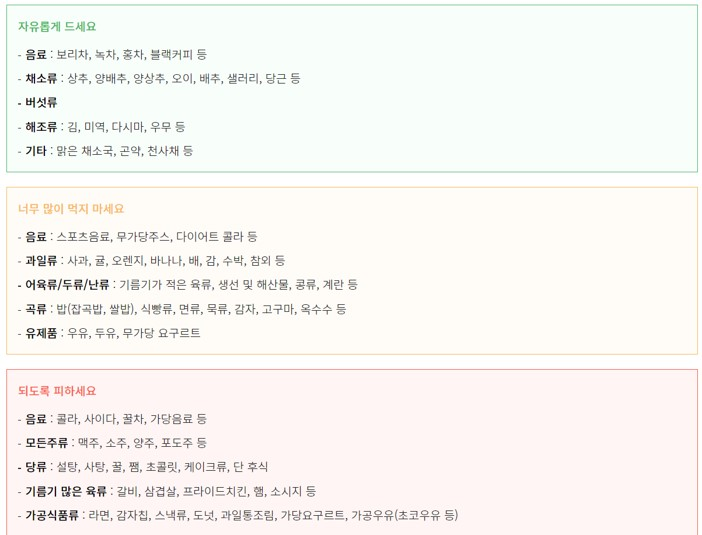

식습관 추천 : Optional Choice

열량 섭취를 줄이는 식사 요령
- 하루 300 ~ 500kcal 줄이기를 위한 실천 tip
- 식사량 줄이기 : 평소 식사량의 1/3 덜먹기, 매끼 밥 1공기 - 2/3공기로 줄이면 100kcal X 3 = 300kcal↓, 매끼 기름 1작은술씩 줄이면, 45kcal X 3 = 135kcal↓
- 간식량 줄이기 : 커피믹스(55kcal), 매실차, 유자차 (90kcal), 이온음료 (65kcal), 단팥빵 (252kcal), 고구마/옥수수1개 (200kcal), 견과류 1봉 (135kcal) 등 불필요한 당분섭취나 고열량 간식을 줄이고 생수,블랙커피, 녹차, 토마토, 오이, 저지방우유 등 열량이 낮은 음료,간식으로 변경
- 패스트푸드 : 단품으로 구입하거나 음료 변경
- 과음이 잦은 경우 : 소주 1병(510kcal), 1~2잔 이내 368~439kcal↓
- 기타 고열량 식품 피하기 : 삼겹살 1인분(200g) 500kcal, 라면 503kcal , 치킨 1조각 295kcal , 감자칩 스낵 340kcal
외식 시 주의사항
- 외식을 하게 되면 과식하기 쉬우므로 가급적 외식의 횟수를 줄입니다.
- 본인의 허용 열량에 적합한 음식을 선택합니다.
- 튀김류와 같은 많은 양의 기름으로 조리한 음식이나 동물성 지방이 많이 함유된 음식은 피합니다.
- 잔칫집이나 뷔페 식당은 과식의 유혹이 많으므로 가능한 가지 않도록 합니다.
- 음식점을 고를 때에는 양식이나 중식보다는 한식이나 일식이 열량이 적은 것이 많습니다.
- 세트 메뉴 보다는 필요한 음식만 골라서 주문합니다.
- 식전에 서비스로 나오는 음식은 가능한 적게 먹도록 하고, 열량이 적은 채소류부터 먹습니다.
- 여러 가지 음식이 한꺼번에 많이 제공될 때에는 열량이 적은 음식부터 우선 먹도록 합니다.
- 음식을 크기 별로 판매하는 경우에는 작은 사이즈의 음식을 주문합니다.
식품의 구입 요령
- 장보러 갈 때에는 꼭 사야 할 식품의 목록과 수량을 적어 가지고 가도록 합니다.
- 배가 고픈 상태에서 시장에 가지 않도록 합니다.
- 자연식품 등 조리가 필요한 식품을 구입합니다.
- 가공식품, 인스턴트식품, 패스트푸드는 사지 않도록 합니다. 완전조리 또는 반조리 되어 판매되는 인스턴트 음식은 일반적으로 열량이 높으며, 짜게 조리되어 식욕을 자극합니다.
- 채소는 많이 구입하고, 고지방식품은 구입하지 않도록 합니다.
- 작은 포장으로 된 식품을 구입합니다.
- 식품의 표시 내용을 읽어 식품의 내용물을 파악하고, 되도록 지방 함유량이 낮은 저지방식품을 구입하도록 합니다.